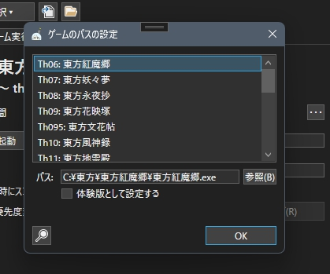

主な機能は以下の通りです。
これは何?
東方管制塔 NX は、高機能、軽量な東方原作専用ゲームランチャーです。
主な機能は以下の通りです。ゲームを起動する
VsyncPatch、thpracなど動作補助ツールを適用してゲームを起動する
環境カスタムプログラムを起動する
ゲームの実行履歴、プレイ時間を記録する
ゲームのウィンドウを自由にリサイズする
ゲームのウィンドウをキャプチャする
各種外部ツールを登録し、起動する
主な機能は以下の通りです。
新機能
東方管制塔 NX ver2.x.x の主な新機能をご紹介します。
[ゲーム選択]ボタン実装、パスが登録されているゲームのみ選択メニューに表示されるようにした。

ゲームパス一括設定ダイアログを実装した。([ゲーム(G)]→[ゲームのパスを設定する])
体験版として指定できるようにした。(これにより神霊廟以降体験版のスコアファイルバックアップに対応)
体験版として指定された作品はゲーム選択メニューでTRアイコンが表示されるようにした。

スコアファイルのバックアップ管理機能をメインウィンドウに統合した。

プラグイン機能を実装した。
英語(米国)、日本語(日本)の2カ国語に対応した。
log.txt(東方動作記録)を開く機能を追加した。
ウィンドウリサイザを簡素化した。
補助ツールインストールダイアログでインストール先を複数指定できるようにした。
他にも様々な変更が含まれます。詳しくはアプリケーションに同胞されているReleaseNote.txtをご参照ください。
他にも様々な変更が含まれます。詳しくはアプリケーションに同胞されているReleaseNote.txtをご参照ください。
主な使い方
ゲームや custom.exe(環境カスタムプログラム) を起動する
[ゲーム選択▾]ボタンから作品を選択します。管制パネルのボタンからゲームの起動や custom.exe(環境カスタムプログラム) の起動など様々な操作を実行できます。

ゲームのパスを設定する
[ゲーム(G)]→[ゲームのパスを設定する]から、「ゲームのパスの設定」ダイアログを起動できます。作品を選択し、[参照(B)]ボタンからその作品の実行ファイル(例:東方紅魔郷→東方紅魔郷.exe、東方輝針城→th14.exe)を指定してください。
体験版の場合は[体験版として設定する]にチェックをいれてください。
メインウィンドウの[ゲーム選択▾]ボタンをクリックすると表示されるゲーム選択メニューには、「ゲームのパスの設定」ダイアログでパスを設定した作品のみが表示されます。
対応している作品
推奨動作環境
Microsoft Windows 10/11
.NET Runtime 8.0 または .NET Desktop Runtime 8.0 のインストールが必要です。
以下のリンクよりインストーラーをダウンロードしてインストールをお願いします。
.NET 8.0 のダウンロード
.NET Runtime 8.0 または .NET Desktop Runtime 8.0 のインストールが必要です。
以下のリンクよりインストーラーをダウンロードしてインストールをお願いします。
.NET 8.0 のダウンロード
アイコンについて
アイコンに使われているキャラクターは、東方管制塔のモチーフキャラです。
キャラクターデザインは藤花陽菜(@Philo_messiah1)さんによるものです。
アイコンに使われているイラストは、私珠音茉白が作成したものです。
プラグインについて
免責事項
ダウンロード
更新履歴
ver2.0.0-release
ver2.0.0-rc.1
ver2.0.0-beta.4
ver2.0.0-beta.3
ver2.0.0-beta.2
ver2.0.0-beta.1
ソースコード
東方管制塔 NX のソースコードは GitHub で2条項BSDライセンスで公開されています。
東方管制塔 NX の GitHubリポジトリ
東方管制塔 NX の GitHubリポジトリ
開発部について
開発協力者